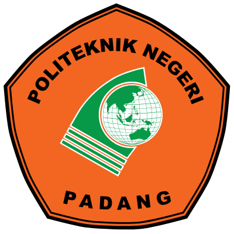
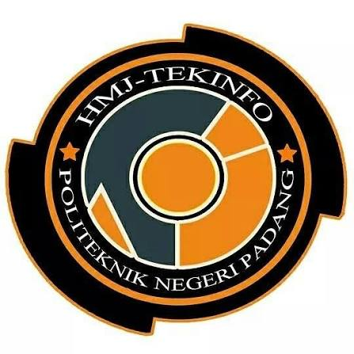

HANIF DINATA, A.Md.T
Lulusan D3 Teknik Komputer | software developer
Saya mengembangkan aplikasi web dan mobile, membangun REST API, mengelola database, serta melakukan deployment dan konfigurasi server untuk mendukung sistem yang berjalan secara optimal.
Tentang Saya

Lulusan D3 Teknik Komputer, Jurusan Teknologi Informasi, Politeknik Negeri Padang dengan IPK 3,58 dan predikat Lulusan dengan Pujian.
Saya memiliki ketertarikan mendalam pada pengembangan perangkat lunak, Internet of Things, embedded system, serta pengembangan aplikasi web dan mobile modern.
Selama masa studi, saya aktif mengembangkan beragam proyek yang mengintegrasikan perangkat keras dan perangkat lunak, didukung oleh pengalaman nyata melalui kegiatan internship profesional dan organisasi kemahasiswaan.
Portofolio Saya
Beberapa proyek yang saya kembangkan selama perkuliahan, internship, dan pengembangan sistem berbasis teknologi.
Pendidikan

Politeknik Negeri Padang
D3 Teknik Komputer — Jurusan Teknologi Informasi
2023 – 2026Pengalaman
Quality Assurance Tester Intership
PT Neuronworks Indonesia
Agustus 2025 – September 2025Melakukan pengujian manual dan otomatis menggunakan Playwright di bawah arahan tim. Menjalankan skrip otomatisasi, menggunakan Postman untuk pengujian API, serta melaporkan bug melalui GitLab guna mendukung kualitas perangkat lunak.
Backend Developer Internship
IMEJ Consultant
November 2025 – Desember 2025Saya mengawali peran sebagai Backend Developer Intern dengan fokus pada pengembangan aplikasi menggunakan Laravel. Saya menangani perbaikan bug serta peningkatan performa dan struktur sistem.
Feed Designer
INATECHNO @kosinaja.id
Juli 2025 – Oktober 2025Mengelola konten promosi layanan penitipan barang untuk akun Instagram @kosinaja.id.
Petugas Operasional Depot Air Minum
Depot Air Minum Sukorejo
Juni 2020 – Februari 2026Bertanggung jawab atas proses pencucian dan pengisian ulang galon, pemeriksaan kebersihan galon, serta pengantaran pesanan kepada pelanggan. Memastikan kebersihan produk, ketepatan pesanan, dan pelayanan pelanggan berjalan dengan baik.
Organisasi & Kegiatan

HMJ-TIHimpunan Mahasiswa Jurusan Teknologi Informasi PNP
Februari 2024 - Februari 2026Snapgram Designer
Politeknik Negeri Padang · Di lokasi
Play a major role in the management of HMJ-TEKINFO Snapgram content, especially the design of national and international day commemorations.
Video Production & Editing Coordinator | PKKMB 2024
Lead the production and editing of PKKMB 2024 introduction video, including concept planning, video shooting, and full video editing for publication
Creating the PKKMB 2024 Twibbon
Designed the PKKMB 2024 Twibbon for IT freshmen's campus welcome.
Graphic Designer - Organizational Feed
Create a feed design to introduce the 2024 management of the organization
Coordinator of Publication and Documentation
Coordination of publication & documentation team for:
- PKM Event 2024,
- Tekinfo Berbagi Takjil 2024, and
- Webinar NgabuburIT Bersama 2024.
including content creation, social media management, and event documentation